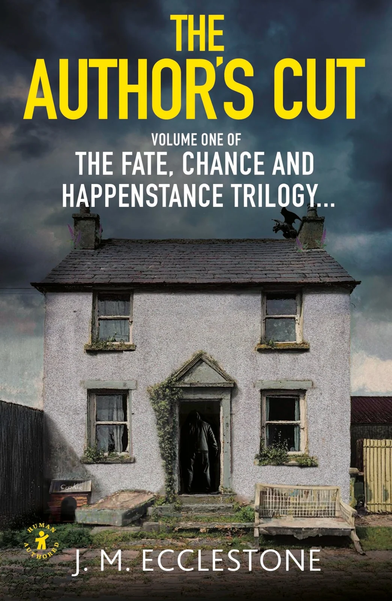

The Author’s Cut
Buy on AmazonFor thirty years, Milly Johnson has been living a life nobody really sees. From the outside, there is little to question: a marriage, a home, a life that carried on much as lives are expected to do.
Behind closed doors, the truth is very different. Once, Milly was a carefree teenager who imagined love, happiness and freedom waiting somewhere ahead of her. Instead, the years have left her almost unrecognisable from the girl she used to be.
But some parts of the past refuse to disappear completely. There was a time before Richard, before the secrets, before Milly learned how much of herself could be hidden from the world. And there was Jake Temple.
Thirty years may have passed, but memory has a peculiar way of preserving the things we thought we'd lost. As past and present begin to collide, choices made decades earlier start to matter again, and the lives of everyone involved are about to be changed in ways none of them could have imagined.
Because sometimes fate doesn't arrive with a warning. Sometimes it simply puts the right person in the wrong place at exactly the right time.
The Author's Cut is the first book in the Fate, Chance and Happenstance trilogy, a story of love, secrets, consequence and the choices that shape a lifetime.
Buy on Amazon